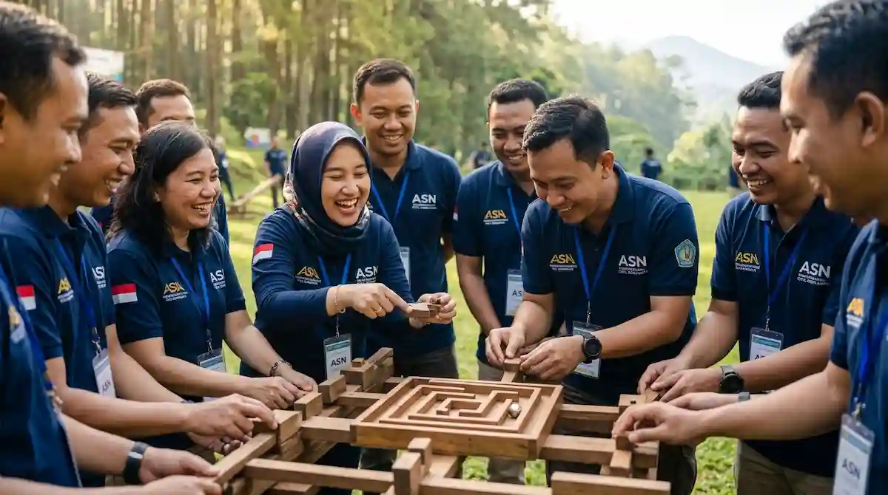

Mengapa Instansi Pemerintah Membutuhkan Outbound?
Pegawai instansi sering bekerja dalam bagian yang terpisah dengan alur kerja yang padat. Interaksi antarbagian kadang terbatas pada urusan administrasi, sehingga kedekatan antarpegawai kurang terbangun. Outbound menyediakan ruang untuk berinteraksi secara santai, melampaui sekat jabatan dan unit.
Selain itu, tuntutan pelayanan publik menuntut koordinasi yang baik. Pegawai yang saling mengenal dan saling percaya cenderung lebih mudah berkoordinasi saat menghadapi pekerjaan bersama. Manfaat umum kegiatan kelompok dijelaskan dalam artikel manfaat utama outbound team building bagi perusahaan di Malang, dan prinsipnya juga berlaku bagi instansi.
Program Outbound Seperti Apa yang Cocok untuk Instansi?
Kebutuhan tiap instansi berbeda, tergantung jumlah pegawai, tugas pokok, dan waktu yang tersedia. Tabel berikut memberi gambaran umum pilihan format kegiatan:
| Format | Gambaran Isi | Cocok untuk |
|---|---|---|
| Setengah hari | Pembukaan, dua sampai tiga permainan tim, dan refleksi singkat | Unit kecil dengan waktu terbatas |
| Sehari penuh | Permainan kerja sama, makan siang bersama, dan sesi refleksi | Seluruh pegawai atau lintas bidang |
| Dua hari satu malam | Rangkaian permainan, diskusi kelompok, dan kegiatan malam hari | Rapat kerja atau pembinaan pegawai |
| Rangkaian bertahap | Sesi singkat berkala yang disisipkan di sela jadwal kerja | Instansi dengan beban layanan tinggi |
Contoh di atas hanya gambaran. Rancangan sebenarnya disesuaikan dengan jumlah peserta, anggaran, dan lokasi kegiatan.
Permainan Apa yang Cocok untuk Pegawai Instansi?
Pegawai instansi biasanya berasal dari beragam usia dan latar belakang. Karena itu, pilih permainan yang inklusif, tidak terlalu menguras fisik, namun tetap menantang secara kerja sama:
- Estafet lintas bagian: Mencampur pegawai dari unit berbeda dalam satu tim untuk meruntuhkan sekat ego sektoral.
- Teka-teki dan pemecahan masalah: Mendorong diskusi aktif, analisis bersama, dan pembagian peran yang tepat.
- Membangun bersama: Menyusun struktur dari bahan sederhana dengan waktu dan sumber daya terbatas.
- Simulasi pelayanan: Permainan peran untuk melatih komunikasi yang ramah, jelas, dan berorientasi pada solusi.
- Lomba santai antartim: Menjaga suasana tetap ringan, menyenangkan, dan penuh tawa antarpeserta.
Ide permainan lainnya tersedia di artikel 7 rekomendasi game outbound team building seru di Batu Malang.

Apa yang Perlu Disiapkan Panitia Sebelum Kegiatan?
Persiapan yang rapi memudahkan seluruh proses. Mulailah dengan menetapkan tujuan, jumlah peserta, dan perkiraan anggaran. Setelah itu, hubungi beberapa vendor dan minta penawaran tertulis yang merinci komponen biaya agar mudah dibandingkan dan didokumentasikan sesuai ketentuan internal instansi Anda.
Atur juga jadwal agar pelayanan kepada masyarakat tidak terganggu, misalnya dengan membagi pegawai ke dalam beberapa gelombang atau memilih hari yang lebih longgar. Informasikan jadwal, pakaian, dan perlengkapan kepada pegawai sebelum hari pelaksanaan. Daftar perlengkapannya ada di artikel checklist perlengkapan peserta outbound Batu Malang.
Seperti Apa Contoh Alur Kegiatan Sehari?
Agar mudah dibayangkan, berikut contoh alur sederhana yang dapat disesuaikan dengan kebutuhan instansi. Urutan dan lamanya tetap perlu dibicarakan dengan vendor:
- Pembukaan: Sambutan singkat pimpinan, pembagian tim lintas bagian, dan pemanasan ceria.
- Briefing keselamatan: Penjelasan aturan main, standar K3, dan tata cara meminta bantuan darurat.
- Permainan inti: Dua sampai tiga permainan simulasi yang melatih kerja sama, komunikasi, dan strategi.
- Makan siang dan istirahat: Momen santai bagi pegawai untuk menikmati hidangan dan bersosialisasi secara bebas.
- Refleksi dan penutup: Fasilitator mengajak pegawai mengaitkan pengalaman bermain dengan pekerjaan sehari-hari.
Alur yang jelas membantu panitia menjaga waktu, sementara pegawai mendapat keseimbangan antara bermain, beristirahat, dan merenung. Sampaikan jadwal ini kepada seluruh peserta sebelum hari pelaksanaan supaya mereka siap dan kegiatan berjalan tertib.
Bagaimana Memilih Vendor untuk Kegiatan Instansi?
Pilih vendor yang berpengalaman menangani peserta dewasa dan kelompok berukuran besar. Tanyakan standar keselamatan, jumlah fasilitator, serta rencana cadangan saat cuaca buruk. Pastikan pula vendor mampu menyesuaikan program dengan tujuan instansi dan memberi dokumentasi kegiatan yang diperlukan untuk laporan. Vendor yang terbuka soal komponen biaya biasanya lebih mudah diajak bekerja sama.
Bagaimana Menilai Hasil Outbound Instansi?
Kumpulkan masukan pegawai segera setelah acara, lalu amati perubahan dalam beberapa minggu berikutnya, misalnya koordinasi antarbagian yang lebih lancar atau suasana kerja yang lebih hangat. Hasil penilaian dapat dimasukkan ke laporan kegiatan. Penjelasan mengenai penyusunan laporan dan surat resmi instansi juga dapat dibaca pada artikel administrasi kelengkapan dokumen outbound instansi di Malang.
Kesalahan Umum dalam Outbound Instansi
Hindari beberapa kekeliruan berikut agar program kebersamaan pegawai memberikan hasil optimal:
- Tidak menetapkan tujuan yang jelas, sehingga kegiatan terasa sekadar hiburan rekreasi biasa.
- Jadwal bentrok dengan layanan publik, akibatnya pelayanan masyarakat menjadi terganggu.
- Memilih permainan yang terlalu berat secara fisik, sehingga sebagian pegawai senior tidak bisa ikut.
- Tidak meminta penawaran tertulis, padahal sangat dibutuhkan untuk proses administrasi pengadaan.
- Tidak ada tindak lanjut pasca acara, sehingga kekompakan hanya bertahan di hari pelaksanaan saja.